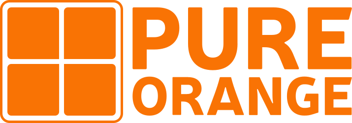

Freelance programmeur
Van concept tot productie: webapps, backends en integraties die blijven werken.

PureOrange BV
Ik help teams en bedrijven met robuuste software, schone API-architectuur en praktische AI-oplossingen. Geen ruis, wel resultaat.
Van concept tot productie: webapps, backends en integraties die blijven werken.
Duidelijke contracts, schaalbare interfaces en systemen die netjes met elkaar praten.
AI waar het zinvol is — in workflows, producten en tooling, met focus op bruikbaarheid.
PureOrange BV is het bedrijf van Saviem Jansen. Klein, scherp en hands-on: ik bouw mee, denk architectuur uit en breng AI praktisch in de operatie. Liever één sterke oplossing dan een stapel half afgemaakte tools.